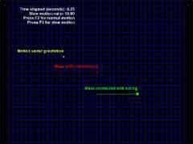

|
第39課 |
 |
|  |
物理模擬簡介:
還記得高中的物理吧，直線運動，自由落體運動，彈簧。在這一課裡，我們將創造這一切。 |
|
 |
 |
物理模擬介紹
如果你很熟悉物理規律，並且想實現它，這篇文章很適合你。
在這篇教程裡，你會創建一個非常簡單的物理引擎，我們將創建以下類：
內容:
| 位置類 |
| * class Vector3D |
---> |
用來記錄物體的三維坐標的類 |
|
| 力和運動 |
| * class Mass |
---> |
表示一個物體的物理屬性 |
|
| 模擬類 |
| * class Simulation |
---> |
模擬物理規律 |
|
| 模擬勻速運動 |
| * class ConstantVelocity : public Simulation |
---> |
模擬勻速運動 |
|
| 模擬在力的作用下運動 |
| * class MotionUnderGravitation : public Simulation |
---> |
模擬在引力的作用下運動 |
| * class MassConnectedWithSpring : public Simulation |
---> |
模擬在彈簧的作用下運動 |
|
 |
class Mass
{
public:
float m; // 質量
Vector3D pos; // 位置
Vector3D vel; // 速度
Vector3D force; // 力
Mass(float m) // 構造函數
{
this->m = m;
}
...
|
下面的代碼給物體增加一個力，在初始時這個力為0
|
|
void applyForce(Vector3D force)
{
this->force += force; // 增加一個力
}
void init() // 初始時設為0
{
force.x = 0;
force.y = 0;
force.z = 0;
}
...
|
下面的步驟完成一個模擬：
1.設置力
2.應用外力
3.根據力的時間，計算物體的位置和速度
|
|
void simulate(float dt)
{
vel += (force / m) * dt; // 更新速度
pos += vel * dt; // 更新位置
}
|
模擬類怎樣運作:
在一個物理模擬中，我們按以下規律進行模擬，設置力，更新物體的位置和速度，按時間一次又一次的進行模擬。下面是它的實現代碼： |
|
class Simulation
{
public:
int numOfMasses; // 物體的個數
Mass** masses; // 指向物體結構的指針
Simulation(int numOfMasses, float m) // 構造函數
{
this->numOfMasses = numOfMasses;
masses = new Mass*[numOfMasses];
for (int a = 0; a < numOfMasses; ++a)
masses[a] = new Mass(m);
}
virtual void release() // 釋放所有的物體
{
for (int a = 0; a < numOfMasses; ++a)
{
delete(masses[a]);
masses[a] = NULL;
}
delete(masses);
masses = NULL;
}
Mass* getMass(int index)
{
if (index < 0 || index >= numOfMasses) // 返回第i個物體
return NULL;
return masses[index];
}
...
(class Simulation continued)
virtual void init() // 初始化所有的物體
{
for (int a = 0; a < numOfMasses; ++a)
masses[a]->init();
}
virtual void solve() //虛函數，在具體的應用中設置各個施加給各個物體的力
{
}
virtual void simulate(float dt) //讓所有的物體模擬一步
{
for (int a = 0; a < numOfMasses; ++a)
masses[a]->simulate(dt);
}
...
|
整個模擬的部分被封裝到下面的函數中 |
|
(class Simulation continued)
virtual void operate(float dt) // 完整的模擬過程
{
init(); // 設置力為0
solve(); // 應用力
simulate(dt); // 模擬
}
};
|
現在我們已經有了一個簡單的物理模擬引擎了，它包含有物體和模擬兩個類，下面我們基於它們創建三個具體的模擬對像:
1. 具有恆定速度的物體
2. 具有恆定加速度的物體
3. 具有與距離成反比的力的物體
在程序中控制一個模擬對像：
在我們寫一個具體的模擬類之前，讓我們看看如何在程序中模擬一個對象，在這個教程裡，模擬引擎和操作模擬的程序在兩個文件裡，在程序中我們使用如下的函數，操作模擬：
|
|
void Update (DWORD milliseconds) // 執行模擬
|
這個函數在每一幀的開始更新，參數為相隔的時間。 |
|
void Update (DWORD milliseconds)
{
...
...
...
float dt = milliseconds / 1000.0f; // 轉化為秒
dt /= slowMotionRatio; // 除以模擬係數
timeElapsed += dt; // 更新流失的時間
...
|
在下面的代碼中，我們定義一個處理間隔，沒隔這麼長時間，讓物理引擎模擬一次。 |
|
...
float maxPossible_dt = 0.1f; // 設置模擬間隔
int numOfIterations = (int)(dt / maxPossible_dt) + 1; //計算在流失的時間裡模擬的次數
if (numOfIterations != 0)
dt = dt / numOfIterations;
for (int a = 0; a < numOfIterations; ++a) // 模擬它們
{
constantVelocity->operate(dt);
motionUnderGravitation->operate(dt);
massConnectedWithSpring->operate(dt);
}
}
|
下面讓我們來寫著兩個具體的模擬類:
1. 具有恆定速度的物體
* class ConstantVelocity : public Simulation --->
模擬一個勻速運動的物體
|
|
class ConstantVelocity : public Simulation
{
public:
ConstantVelocity() : Simulation(1, 1.0f)
{
masses[0]->pos = Vector3D(0.0f, 0.0f, 0.0f); // 初始位置為0
masses[0]->vel = Vector3D(1.0f, 0.0f, 0.0f); // 向右運動
}
};
|
下面我們來創建一個具有恆定加速的物體：
|
|
class MotionUnderGravitation : public Simulation
{
Vector3D gravitation; // 加速度
MotionUnderGravitation(Vector3D gravitation) : Simulation(1, 1.0f) // 構造函數
{
this->gravitation = gravitation; // 設置加速度
masses[0]->pos = Vector3D(-10.0f, 0.0f, 0.0f); // 設置位置為左邊-10處
masses[0]->vel = Vector3D(10.0f, 15.0f, 0.0f); // 設置速度為右上
}
...
|
下面的函數設置施加給物體的力 |
|
virtual void solve() // 設置當前的力
{
for (int a = 0; a < numOfMasses; ++a)
masses[a]->applyForce(gravitation * masses[a]->m);
}
|
下面的類創建一個受到與距離成正比的力的物體： |
|
class MassConnectedWithSpring : public Simulation
{
public:
float springConstant; // 彈性係數
Vector3D connectionPos; // 連接方向
MassConnectedWithSpring(float springConstant) : Simulation(1, 1.0f) // 構造函數
{
this->springConstant = springConstant;
connectionPos = Vector3D(0.0f, -5.0f, 0.0f);
masses[0]->pos = connectionPos + Vector3D(10.0f, 0.0f, 0.0f);
masses[0]->vel = Vector3D(0.0f, 0.0f, 0.0f);
}
...
|
下面的函數設置當前物體所受到的力： |
|
virtual void solve() // 設置當前的力
{
for (int a = 0; a < numOfMasses; ++a)
{
Vector3D springVector = masses[a]->pos - connectionPos;
masses[a]->applyForce(-springVector * springConstant);
}
}
|
好了上面就是一個簡單的物理模擬，希望你能喜歡：）
 |
版權與使用聲明:
我是個對學習和生活充滿激情的普通男孩,在網絡上我以DancingWind為暱稱，我的聯繫方式是zhouwei02@mails.tsinghua.edu.cn，如果你有任何問題，都可以聯繫我。
引子
網絡是一個共享的資源，但我在自己的學習生涯中浪費大量的時間去搜索可用的資料，在現實生活中花費了大量的金錢和時間在書店中尋找資料，於是我給自己起了個暱稱DancingWind，其意義是想風一樣從各個知識的站點中吸取成長的養料。在飄蕩了多年之後，我決定把自己收集的資料整理為一個統一的資源庫。
版權聲明
所有DancingWind發表的內容，大多都來自共享的資源，所以我沒有資格把它們據為己有，或聲稱自己為這些資源作出了一點貢獻。故任何人都可以複製，修改，重新發表，甚至以自己的名義發表，我都不會追究，但你在做以上事情的時候必須保證內容的完整性，給後來的人一個完整的教程。最後，任何人不能以這些資料的任何部分，謀取任何形式的報酬。
發展計劃
在國外，很多資料都是很多人花費幾年的時間慢慢積累起來的。如果任何人有興趣與別人共享你的知識，我很歡迎你與我聯繫，但你必須同意我上面的聲明。
感謝
感謝我的母親一直以來對我的支持和在生活上的照顧。
感謝我深愛的女友田芹，一直以來默默的在精神上和生活中對我的支持，她甚至把買衣服的錢都用來給我買書了，她真的是我見過的最好的女孩，希望我能帶給她幸福。
資源下載:
文檔 網頁格式
PDF格式
源碼 RAR格式 |
| |